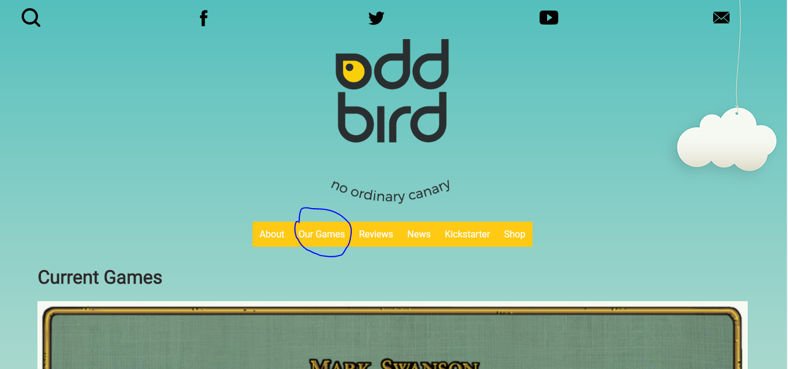
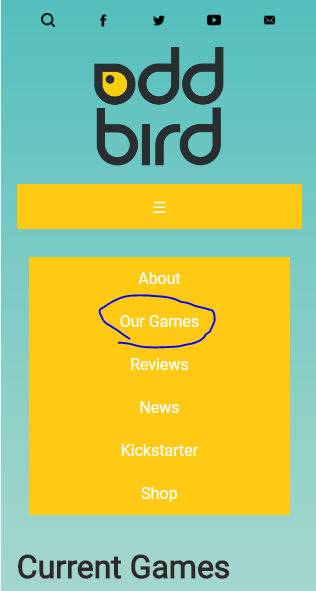
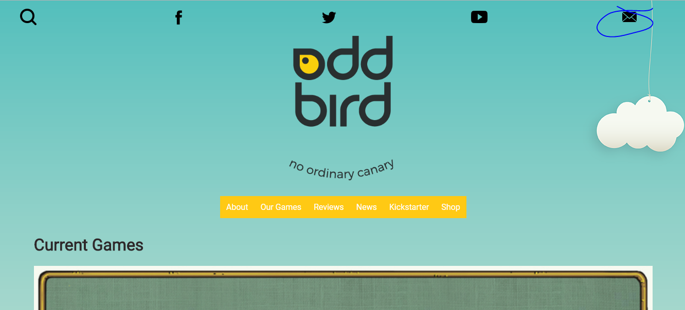
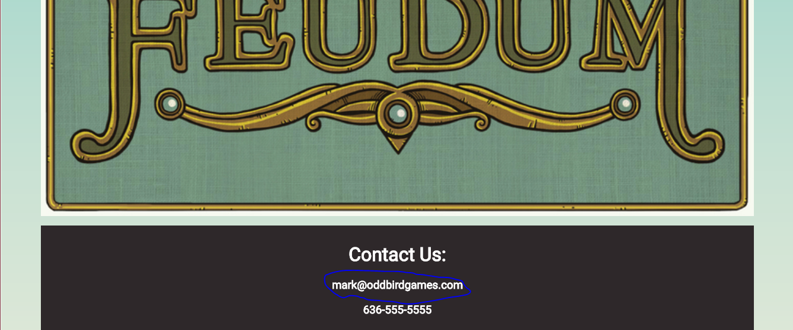
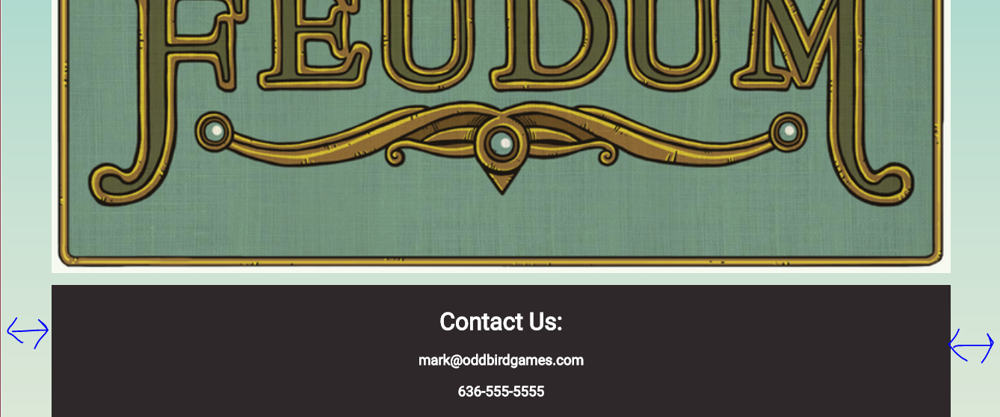

For this assignment, I reviewedthe tabletop gaming sitefrom Rob's class.
I think the audience for this site would be interested in learning more about the game itself when they go to the site. This was easy for me to do, as I opened the site on desktop and immediately saw the tab for “Our Games” that included info on Feudum and its expansion packs.
On mobile, it’s easy to do as well because the horizontal navigation is collapsed into an visually pleasing hamburger menu.
I decided my next task would be to find contact information on the site so a potential reader could contact the creator if they had any questions, comments or concerns. This was also easy to do with the site’s design thanks to the social icon navigation at the top having an envelope that showed it was for an email.
And if a reader happened to miss that, they would easily be able to find contact info in the footer at the bottom of the page.
The only design problem I had here was that the footer’s darker background’s width matched the content width of the site, when I think it should stretch to the ends of the screen because it’s separate from the content itself and more part of the base template. And on the base template, the social icons stretch all the way across the page, as does the background image.
